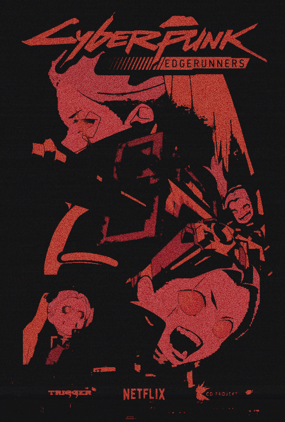
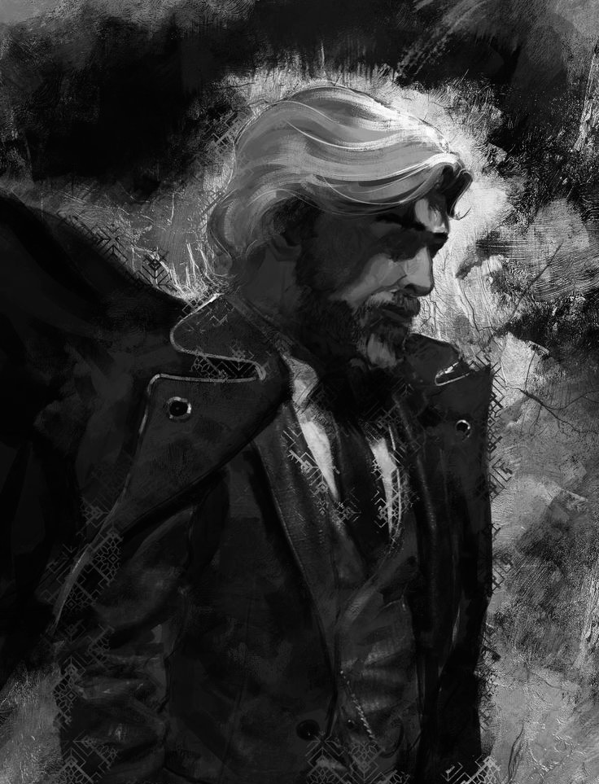
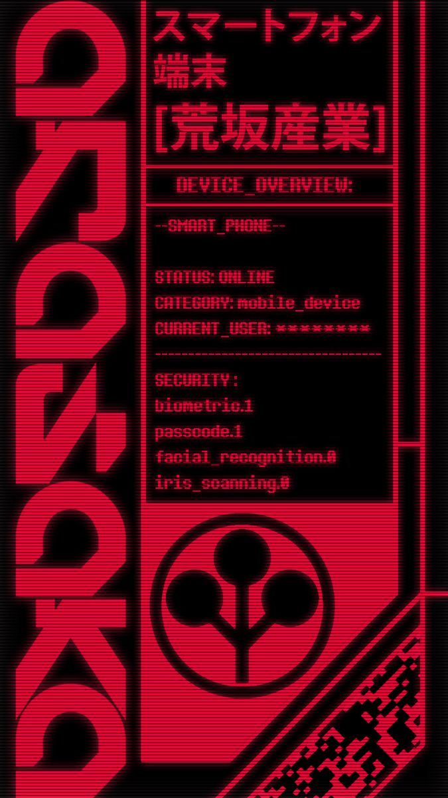
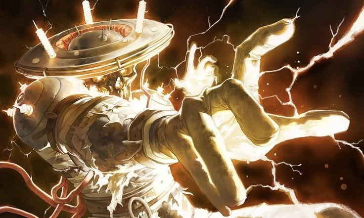
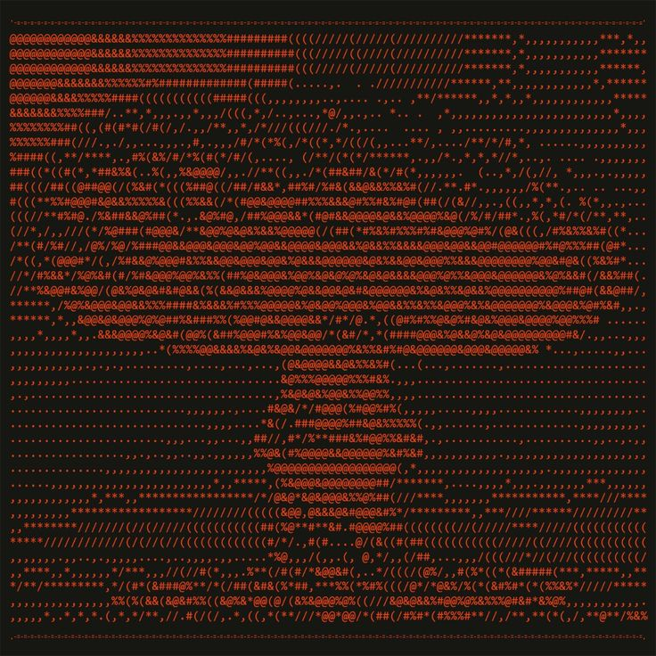

WANTED // ELIMINATE
☠ PRIORITY_ALPHA

ID: J.SILVERHAND_B0A
CLASS: ROCKERBOY / TERRORIST
CRIME: NUKED_ARASAKA_TOWER
REWARD:
$ 100,000,000 EDD
> USER: AMACDOG
> ROLE: ADMIN
> STATUS: ONLINE
PLAYING:
[<<] PAUSE [>>]
USER_ID
[[ CASS ]]
AUTHORIZED
AUTHORIZED
MISSION_CLOCK
v33.0
CURRENT_CYCLE
33
STATUS: ACTIVE
"For those who come after..."
[00:00:01]KERNEL boot_sequence: lonely_day.sh
[00:00:05] [DEBUG] allocating_memory_blocks: 0xDEADBEEF
[00:00:10] [ERROR] Such a lonely_day.exe
[00:00:11] [ERROR] And it's mine.log
[00:00:12] [CRITICAL] The loneliest day of my_life.dir
[00:00:11] [ERROR] And it's mine.log
[00:00:12] [CRITICAL] The loneliest day of my_life.dir
[00:00:15] [MONITOR] heart_rate: null // pulse: undetected
[00:00:20] [ERROR] Such a lonely_day.exe
[00:00:21] [ERROR] It's a day that I'm glad I survived.bat
[00:00:21] [ERROR] It's a day that I'm glad I survived.bat
$ ssh guest@external_world --connect_timeout 0
[00:00:35] [TRACE] 0x7FF0: If you go.exe
[00:00:36] [TRACE] 0x7FF1: I wanna go with you.link
[00:00:37] [TRACE] 0x7FF2: If you die.void
[00:00:38] [TRACE] 0x7FF3: I wanna die with you.null
[00:00:36] [TRACE] 0x7FF1: I wanna go with you.link
[00:00:37] [TRACE] 0x7FF2: If you die.void
[00:00:38] [TRACE] 0x7FF3: I wanna die with you.null
[00:00:50] [MEMORY_DUMP] Take your hand.ptr
[00:00:52] [MEMORY_DUMP] And walk away.exit
[00:00:52] [MEMORY_DUMP] And walk away.exit
$ ping -t consciousness.sys
Request timeout. Code: 404
$ ping -t consciousness.sys
Request timeout. Code: 404
$ tracert /dev/heart
Request timeout. Code: 404
$ ping -t consciousness.sys
Request timeout. Code: 404
$ tracert /dev/heart
[00:01:05] [BUFFER_OVERFLOW] emotional_payload_too_large
[00:01:20] [ERROR] Such a lonely_day.exe
[00:01:21] [ERROR] And it's mine.log
[00:01:22] [CRITICAL] The loneliest day of my_life.dir
[00:01:21] [ERROR] And it's mine.log
[00:01:22] [CRITICAL] The loneliest day of my_life.dir
$ access_denied: /root/happiness/permission_not_found
[00:01:45] [TRACE] 0x8FF0: If you go.exe
[00:01:46] [TRACE] 0x8FF1: I wanna go with you.link
[00:01:47] [TRACE] 0x8FF2: If you die.void
[00:01:48] [TRACE] 0x8FF3: I wanna die with you.null
[00:01:46] [TRACE] 0x8FF1: I wanna go with you.link
[00:01:47] [TRACE] 0x8FF2: If you die.void
[00:01:48] [TRACE] 0x8FF3: I wanna die with you.null
[00:02:10] [FATAL] Such a lonely_day.exe
[00:02:11] [FATAL] And it's mine.log
[00:02:12] [FATAL] It's a day that I'm glad I survived.bat
[00:02:11] [FATAL] And it's mine.log
[00:02:12] [FATAL] It's a day that I'm glad I survived.bat
while(lonely_day) { repeat(suffering); }
[00:02:20] [FATAL] The loneliest day of my_life.dir
[00:02:22] [FATAL] The loneliest day of my_life.dir
[00:02:25] [FATAL] The loneliest day of my_life.dir
[00:02:22] [FATAL] The loneliest day of my_life.dir
[00:02:25] [FATAL] The loneliest day of my_life.dir
[00:02:35] [CLEANUP] purging_cached_hope... done.
[00:02:40] [SYSTEM] chmod 000 /feelings
[00:02:41] [SYSTEM] rm -rf /memories/mine
[00:02:41] [SYSTEM] rm -rf /memories/mine
HALT sequence_complete.
[00:03:00] EOF reached. System on standby.
[00:03:00] EOF reached. System on standby.
ASSET_VIEWER
ID: #CP77

ART_ARCHIVE // RENOIR

"Live keep forcing cruel choices."
TACTICAL_MAP_v0.88
[ TARGET: LOCKED ]


> EXECUTE: "Run while you still can"
FILE: SOAD_HIGHAWAY_SONG.TXT
// Friction,lines,bumps
// The highaway song complete
// The signs are all turning right
// Do you want me to try
[SYSTEM_LOG: END_OF_FILE]
AUDIO_DECODER // LAUFEY v.START
X
From the start
Laufey
STATUS: SENTIMENTAL_LOOP
[システムログ] ARASAKA_NET_v4
警告：未認可のアクセスを検出
メモリキャッシュ：クリア中...
-----------------------
ターゲット：ナイトシティ
ステータス：監視中 [LOCKED]
データ同期：98.4% 完了
-----------------------
>>> 実行：サブネット・スキャン
暗号化キー：再構築中 [DONE]
TACTICAL_VIEWER // NC_DATA_LOG
[X]
